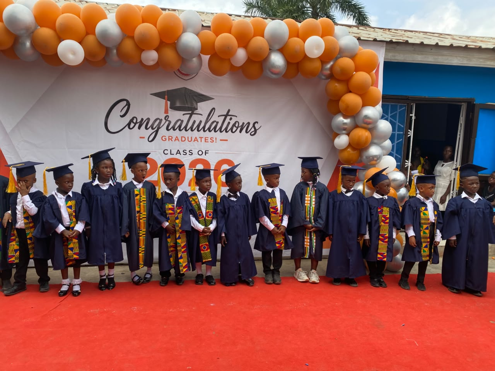

Ogbojo, Ghana · Est. 1997
Faith, learning
and excellence.
Seventeen batches presented for the Basic Education Certificate Examination — Christian Missionary Bilingual School raises God-fearing, bilingual learners ready for the modern world.
About Us
Raising learners who fear God and understand the world.
Christian Missionary Bilingual School is situated along the ARS – American House stretch in Ogbojo, and is known throughout the community for academic excellence and for instilling the fear of God in every learner. We are regarded as one of the most progressing schools in the area, with clearly defined goals for our pupils — who go on to distinguish themselves across the sub-region, speaking French fluently and engaging confidently with the modern technological world.
Our Journey
From “Noah's Ark” to who we are today.
The school started as a Sunday School with three children at the mission house in Madina. In August 1997 it moved to its present site in Ogbojo — a wooden structure of 36 children, nicknamed “Noah's Ark.”
-
1997
Noah's Ark is built
The school moves from a Sunday School of three children at the mission house in Madina to its present site in Ogbojo — a wooden structure housing 36 children.
-
2007
Junior Graphic funfair — 2nd place
On 24th November 2007, the school competed strongly in an educational funfair organised by Junior Graphic, a renowned Ghanaian newspaper, placing second.
-
2016
OASIS Maths & Science Clinic
On 26th September 2016, learners were enrolled on the OASIS Mathematics and Science Clinic, strengthening the teaching of two vital but often daunting subjects.
-
2023
Inter-school Maths & Science Quiz champions
On 9th June 2023, the school won an inter-schools Maths and Science Quiz, taking home a trophy that now rests on the Headmaster's table as a symbol of hard work.
Academics
Excellence, tuition and counselling — since day one.
Gallery
Life at Christian Missionary Bilingual School